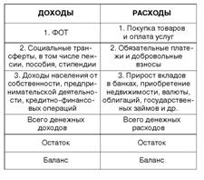

| Денежная масса как совокупность безналичных и наличных денег, покупательских и платежных средств призвана обеспечить в национальной экономике обращение товаров и услуг. В ее структуре выделяют активную часть – денежные средства, реально обслуживающие хозяйственный оборот, – и условно-пассивную часть – денежные направления, которые потенциально могут служить расчетными средствами. Изменение объема денежной массы зависит не только от увеличения количества находящихся в обращении денег, но и от ускорения их оборота. Скорость обращения денег – быстрота их оборота при обслуживании сделок. Для анализа степени обеспеченности экономики денежными средствами также используют показатель – коэффициент монетизации. Он рассчитывается как отношение среднегодовой величины денежной массы к номинальной величине ВВП. Этот коэффициент является величиной, обратной скорости обращения денег. Объем денежной массы в стране во многом зависит от уровня общего потребления товаров и услуг населением. Баланс денежных доходов и расходов населения отражает движение той части ВВП РФ, которая в форме денежных доходов (табл. 1) поступает в распоряжение населения и используется на покупку товаров и оплату услуг, добровольные и обязательные платежи и взносы, также учитываются все денежные средства, направленные на все виды сбережений. Таблица 1 Форма баланса денежных доходов и расходов населения РФ  |